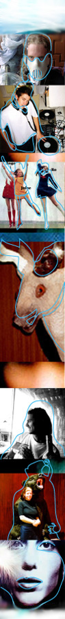

| |
ALL NOISY ON THE SBS FRONT
| |
"I want to create in whatever form I choose, to express myself," says artist Ben Whitaker ~ "This, to lots of people, is surprisingly Australian, but natural and essential to me - I coined the term 'Austronica' to best describe my music as djX MorBid, hopefully no one else has come up with it"
| |
Ben isn't just a DJ that comes up with crazy names, he dabbles in digital art, painting, drawing, writing and plays in an 'extreme' band as well. Oh, and he wears a hockey mask.
Young people like Ben will be profiled on SBS Radio's Alchemy, a variety segment where 'modern', 'innovative' and 'indigenous' are the key words, as well as across SBS's network of media channels throughout October.
Artists will also be profiled in super-cool short segments on SBS TV during the month, with Artist Breakers uncovering the best of noise applicants.
Checking out the Foong sisters, for example, should definitely be on your must see list. Angela, Juliana and Rowena Foong are the adept young Newcastle divas who have a store and fashion label entitled 'Spareparts Industries' where the focus is on used, weird fabrics and not taking themselves seriously.
Similarly, artists like the Foongs, musicians and interesting crafty types such as Kate Rohde and her intriguing 'taxidermy' style of sculpture will have the opportunity to receive exposure through many of these SBS outlets, including the web.
Then there's SBS's Whatever - audio features created by second year radio students from Sydney's Macquarie University that take inspiration from the words 'noise' or 'justice' - ending in top notch soundscapes, current affairs features, radio plays and more. Check it out at the Whatever website for more info on the project and its artists.
noise also joined with SBS Language Radio to find those applicants who came from cultures other than western, those who speak languages other than English. And in a sort of 'spreading the joy' way, noise and SBS have widened the arts media initiative to penetrate other sectors of the community.
Hopefully the next festival will unearth more hidden talent from deeper within these valuable areas, and you can expect to hear truckloads of such artists profiled this year.
Be sure to keep wandering through the vast vaults of noise profiles and info on our site, while sussing out the scene over on SBS. If soccer, indie film, the best world news or South Park are already in your bag o' favourites, stay right where you are for the October noise onslaught.
If, on the other hand, you're not already a regular - you'll soon discover what all the hoo-har is all about as you listen to, watch and surf the serene sanctuary of SBS.
Return to the SBS Project Homepage
(Psst... we reckon you'll also be interested in the ABC TV, ABC RADIO and NAVA Projects)
|
|
|